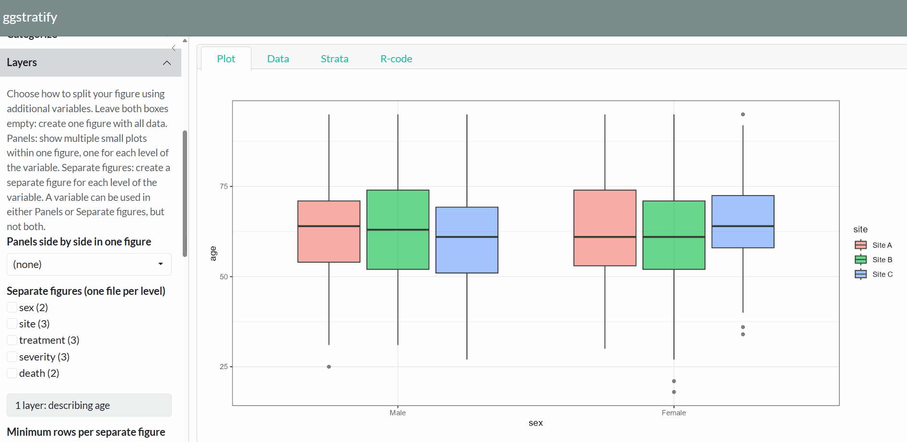

A one-function, point-and-click Shiny interface for the descriptive analysis.
ggstratify(your_data)That is the only function you need to remember.

Overview
Descriptive analysis is essential in every research study. Humans (not AI) need to understand the data before making decisions, such as choosing an appropriate statistical model.
In particular, understanding how variables are distributed across strata defined by other variables is often critical.
Visually inspect your data without repeatedly writing code.
ggstratifyruns entirely locally and requires neither a network connection nor a language model.Easily export figures to share with collaborators.
Before you start: decide the variable types
This package describes what it is given. It does not guess what you meant. Convert each column to the type you intend before handing it over.
dat <- transform(
dat,
sex = factor(sex, levels = c("Male", "Female")), # groups as factors
severity = factor(severity, levels = c("Mild", "Moderate", "Severe")),
age = as.numeric(age) # measurements as numeric
)
ggstratify(dat)A grouping variable left as 1, 2, 3 will be described as a number. The order of a factor’s levels becomes the order of the panels, the figures and the axis.
Installation
From CRAN:
install.packages("ggstratify")The development version from GitHub:
# install.packages("remotes")
remotes::install_github("AkiShiroshita/ggstratify")Usage
library(ggstratify)
ggstratify(epi_cohort) # the example data that ships with the package
ggstratify(iris) # data.frame / tibble / data.table / matrixThe screen
| Tab | Contents |
|---|---|
| Plot | Either every figure at once as panels (fastest) or one at a time, enlarged. The variables you chose decide which (see below) |
| Data | The first 200 rows |
| Strata | Every stratum: variable, level, N and the file name it will be written to. Strata with no file name get no figure. Plus the rows excluded for missing values |
| R-code | The ggplot2 code for the figure on screen. One button copies it |
Figure types
Boxplot / Density / Dot + Error / Dotplot / Histogram / Kaplan-Meier curve / Line / Scatter / Violin
Derived variables
Derive a variable makes a new categorical variable out of one you already have, which can then be used as a layer like any other. A continuous variable becomes quantile groups, equal-width bins or your own cut points. A variable of any type becomes missing vs observed: the rows where it has a value and the rows where it does not.
crp in the bundled epi_cohort is incomplete on purpose, so ggstratify(epi_cohort) is enough to try it.
Acknowledgements
- Claude Code (Anthropic’s Claude Opus 5) assisted with adding notes, testing and English-language proofreading. The design, decisions and final responsibility remain the author’s.
- The package design was inspired by ggplotgui (Gert Stulp, GPL-3).